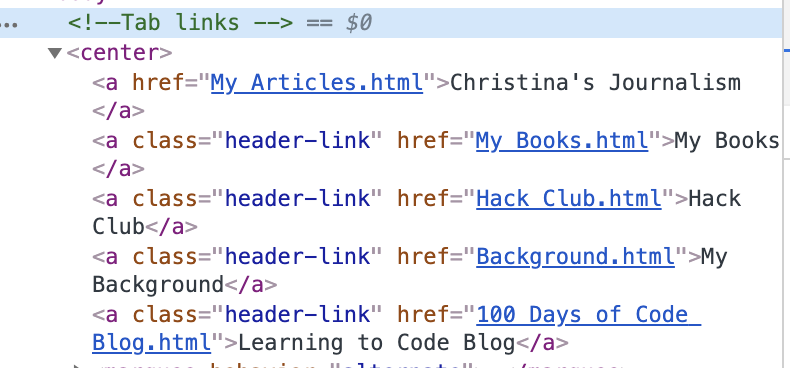
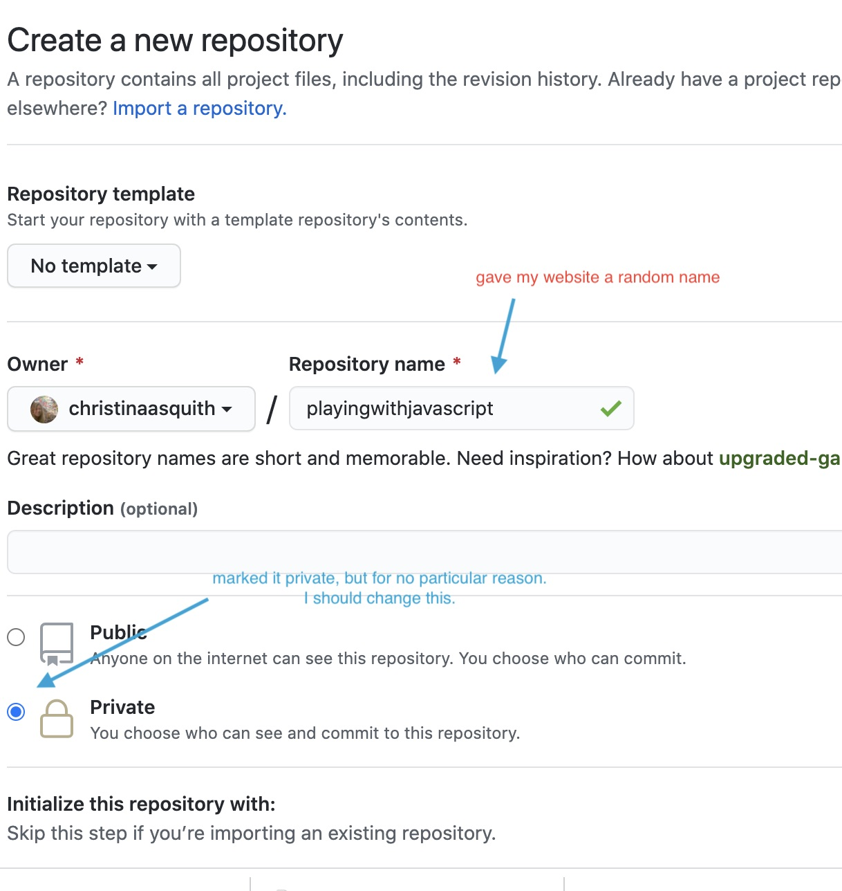
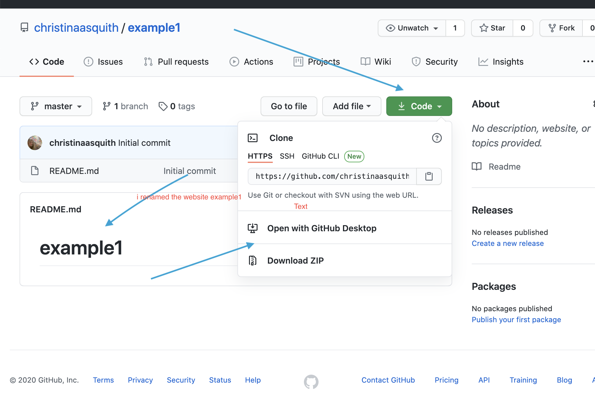
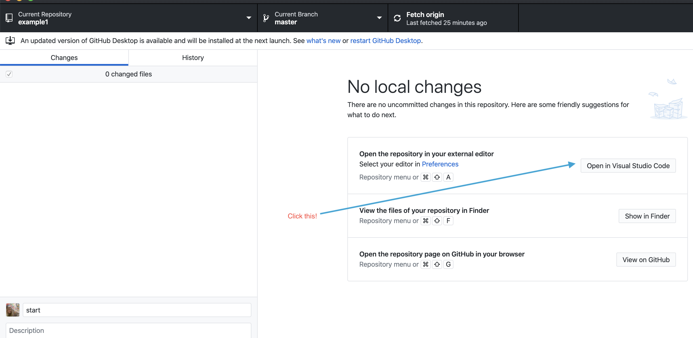
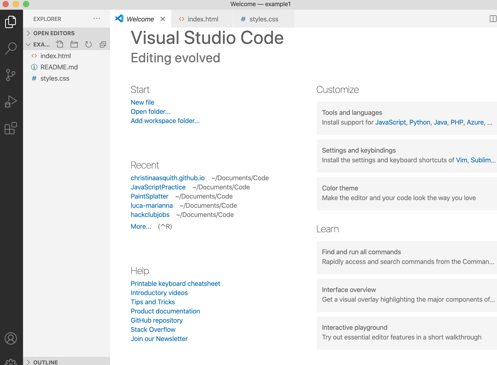
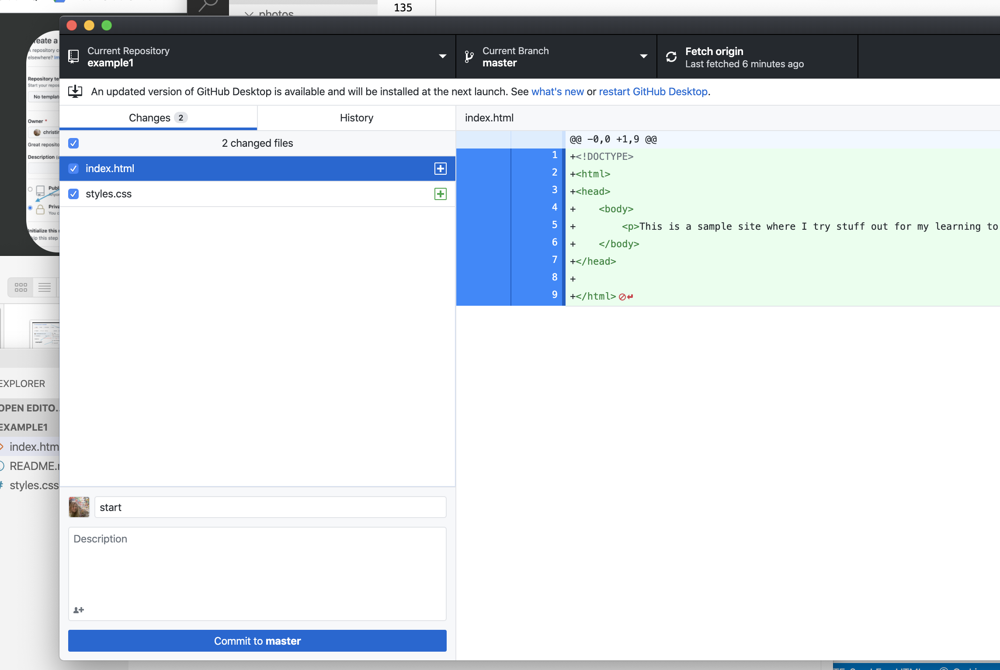
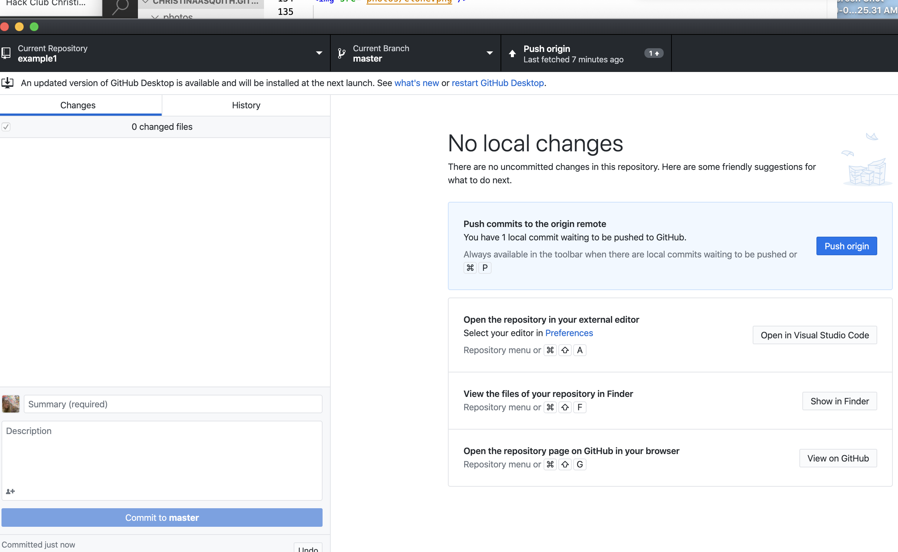
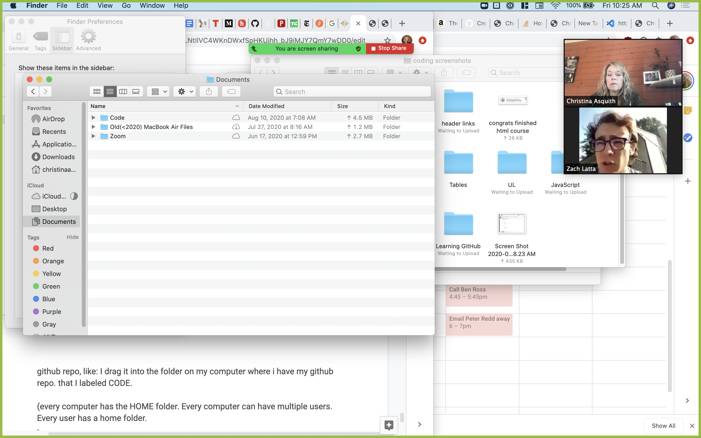

Most people never get past their first 100 days of learning to code. High schoolers join coding orgs, but only learn WIX, templates, or drag-and-drop code. It's much better and more fun to really learn how computers work, and how they can be a tool for you in whichever way you choose
How This Works
This blog that charts my first steps, links I liked, and how I felt. When you feel stuck, I hope it helps you
move along more quickly
Who I am
In 2020, I joined Hack Club, a nonprofit that helps high schoolers
start after-school computer clubs. My job is Chief Operating Officer, which means I work directly with the founder. When hired, I was the only non-technical person on the
team.
Background
My middle school computer science club had 12 boys and a male teacher. No girls. My high school didn't have a CS club at all
My senior year in high school in 1991 (on right) just as the web was beginning. Pre-internet! Six years later I'd type my first email.
Ok, so now I'm learning to code- something most high schoolers still haven't yet learned.
This blog will chronicle my learning as I:
Understand the history of computers and the internet
Learn to code so I can build and do more amazing stuff
Chronicle my learning journey
Share so others can do the same.
A roadmap Follow my stages of learning
Beginner Goals: Spring 2020
What are my goals?
Understand that technology is just a tool and how real programmers think/talk/use tech
Understand how to use Repl.it/or VS Code
Learn HTML basics
Learn basics of styling w CSS
Learn how to be self-taught (how to use Google/YouTube/GitHub/Hack Club Slack and workshops)
Learn the landscape: history of computers/ operating systems / servers/ folders / browsers/the internet.
Learn basics of GitHub and how to commit and push but also WHY use GitHub?
Learn how to create a domain name for myself, link my code to it, update my code, and then build out new sites
on my domain
Begin to understand what else I could learn, ie other languages
Early 2019
In 2019 I built my first html website after meeting Hack Club founder and feeling curious about coding. I went
through Hack Club's How to Build a Personal Website
workshop on Hack Club's website. Had zero idea what I was doing. Didn't know what html was; how the internet
started. Who built all this internet infrastructure???? I needed context and love reading so fortunately one
afternoon at Barnes and Nobles I purchased "The Innovators",
a nonfiction book that tells the story of the people behind the computer/internet. Suddenly, I saw the internet not
as something from space, but rather as the result of humans building and experimenting over hundreds of years.
Following Hack Club's tutorial, I build a website in repl.it but then I gave up
and did other things for a year. Felt like i couldn’t do it. Or worried it would take to long. Forgot about it.
Spring 2020
Decide I want to give coding another try
April
Asked my 1st question on Hack Club slack
Joined Codeacademy.com and pay like $14/month.
Working my way through the HTML class in Codeacademy. It's at least a month long course, and it's filling in
the gaps for me.
May
Signed up for GitHub. I have no idea what it is.
Bought a domain name at Google. Friends from Hackclub.com help me every day with questions, or I would have
gotten very stuck
Finished the intro on HTML from Code Academy and started my own websites with span, line breaks, italics, bold
and unordered lists
It's May 22nd and I earned a "badge" at Codeacademy but i'm only 4% into my htm lesson. UGH. That took me two
days. I'm taking their tutorials and applying what I learn on my personal repl.it site and that's been great.
I'm practicing styling tags inside html and hrefs to add hyperlinks. I just went to hack club slack to see if
someone could recommend how to build a blog. Some people are recommending Jekllrb and another
site But honestly I don't know how to build those into my code.
It's so great to have Sam in Singapore bc someone is always awake, but that advice is too far advanced for
me. So I guess a cool goal would be to figure out how to get that into my code. Hack Club is great for support
when I get stuck, but it's not a place to fully learn how to code. Both those are really valuable though.
Also, i want to ship this, but I don’t know if I should ship my repl.it link, my github link or connect it to
christina.cool and ship that. I have to get my personal site together…. I wish i had the whole day to code-
its so exciting.
May 24th
Loving going thru codeacademy while simultaneously building my site. This morn I created tab links at the top of
my site that will allow me to click on them and go somewhere else on the site.

Christina's top 10
Still hitting questions, like my push to github isn’t uploading my active website. I slacked my expert friend w
this question. Without that, not sure how I would have figured it out. Also, my daughter and i posted on our town
listserve that we’d build you a website for $50, and we got a client. Having this pressure will be awesome.
Still struggling w divs but adding them to my site. My main worry atm is how will i remember all this. When
will it become second nature. Also, my code is getting so long-- i’m struggling to not feel overwhelmed by it.
Do you ever want to just code all day? It’s kind of addictive!
Set as my Summer of Making goal as learning some Javascript
Made this website public.
continuing Codecademy course. I'm 53% finished with HTML beginners course
Practicing styling my CSS, including lists, tables and forms
Moved to Visual Studio Code from Repl.it. This was not easy, and I had a lot of support from my friends at
Hack Club. This is a more advanced coding editor, and there were a couple days of frustration as I learned a
new system, but using the same tools as professional developers is pretty great.
Here's some more detailed info on how I synced up VS code with my GitHub account. This will be one
of my first detailed blog accounts.
I begin downloading Visual Studio Code- and that`s easy and free. Now I want to start building a new
website, and I`d like to create that in VS Code. How do link up VS Code and my GitHub account?
First step: Go online to my GitHub account and open a public repo in github (if you want to make it private
you have to pay) Click add a README and name your website.

Use lowercase in listing your website name...
Then click the green button Create repository...
Click the green CODE button, open w Github desktop... Then said YES to Clone. So I've created a
repository in GitHub called example1...

Then hopefully you'll see the button that says: Open in VS Code...

once you click that, it should open up a new thing in VScode like this below, and I've added files
index.html and styles.css so I can start coding

I typed in a little sample code just to keep this going. And now i will see if I can get my website
online
If you open up GitHub desktop, you should be able to go through a familiar flow now of committing and
pushing

and then push: 
do you find this confusing and wonder why its so complicated? I do. My co worker Zach Latta helped me
through every step of learning this. I would call him and screenshare so he could walk me through,
step-by-step, and I would write it down and commit it to memory. Here is a screenshot of him helping me.
Look at my chaotic screen and how frustrated I look!

(I look frustrated)
done!
Built christina.cool/parents This was a way to
implement some stuff I'd learned in codecademy, including Divs and Tables. Shared it w friends. This is the first
"real" thing I've built and while it's not useful, it's really important to have the confidence to build and share
projects as a way to push myself to keep going. Sharing publicly matters a lot. On the ship
Built a fundraiser presentation for a donor and got live advice from a talented webdesigner (Lachlan) that
pushed me. I also learned to 2 things: two use Hack Club's font, and to pull the colors and a graphic from another
website and put it in my own.
I also shared the website on a call with colleagues at Hack Club, which was fantastic. Having a community to share
the milestone moments of coding is really important. Presenting that made me feel amazing, and motivated me to
keep going. This was a private fundraising doc, so I can't share it :(
Watched a Hack Club ama presentation with Dylan Field, founder of Figma, and saw a bunch of students using
Figma, which inspired an idea in me that one day i could create my own designs for my sites, and not rely on
others images existing on website. This is unlocking a creativity in me that I'm excited to explore.
August
Six months after I started in earnest, I'm coming to the end of my self-described "beginners' stage and I'm testing that I can apply my knowledge and
finding some gaps. Overall, my emotional state is excited: I feel encouraged that I'm learning because I know now
how to build and publish websites for the world to see, and I see very clearly what I've learned (html basics plus
a little styling) and I see the next stages of my learning, which is tables and forms and more styling like how to
publish photos. When I look at basic website code, I understand it. once I master this, I'll move onto
javascript-- there, I'm excited to start working with databases.
Note: I code only 1-2 hours a week! If you have time to do more, you will move way faster than me. You can get past the beginner stage in a month if you 6-8 hours a week.
Winter 2020
December 2020
Let's recap because I haven't posted in a while:
I've started JavaScript and had 2-3 projects I've begun by haven't finished, which is fine. One is a Memory Card gameat Hack Club workshops
and the other is a slideshow of Hack Club students I helped build with my friend Theo. I had to install libraries. However, JavaScript is
still super confusing, and I am not at all comfortable with it and I've been practicing occasionally for a while
now so I'm going to diversify what I'm learning in the hopes it will give me context
I'm running a small Hack Club so I regularly practice and build on my html and css
Over Christmas, I want to chip away at more JavaScript, but I have other goals too
Goals for stage 2 of learning to code
Build something I want in Javascript
Collaborate on GitHub a project with another coder
Work with APIs so I can get computer programs to talk to each other(everyone's always talking about them)
Build a bot and see people using it
Use a Framework like Next JS
Use a library
Be able to check out software offered to me and decide if I want to use it, like Prettify
Once I get to a comfort level with the above, I'll have reached the next stage of my learning. These will be in
service of a couple projects I'm going to work on. Currently, I use html and css constantly to build websites and
teach students. Like I said, I'm stuck on JavaScript so I have to move on and learn new stuff and dip back in.
I'll figure it out.
Early Spring 2021
February 2021
Let's recap because I haven't posted in a while:
Javascript is taking longer than I imagined, but I've covered all the concepts so far including variables, if/else, loops and arrays, built with document.queryselector, and functions, and imported a library of confetti and snow. But if you asked me to build a project, I wouldn't be able to. So I soldier on.
here's what has helped: For concepts and a road map, Zell Liew's blog was great. For a first project, this beginner site was good. Thanks to my friend Jessica Card for sharing!
Helping me were Hack Club workshops konami, password generator and spin the wheel all at Hack Club workshops They are best in class
Other cool advancements
I'm in the flow with HTML and CSS. Running a coding club pushed me to master it, and I learn a bit more CSS each time I built with Javascript
On GitHub, I'm now creating repos, merging code, and using branches...I'm very close to collaborating on a project with someone. Such a huge shout out to Hack Clubber Abby, who sent me this Intro to GitHub video which I love, and followed along 10x.
The terminal is where I know create repos, and using it is my first peek into the back end world. I know CD, ls, and then commands to help me make commits. I still don't understand what a git is. But using terminal helps me understand my computers filing system, and is also a very easy way to impress people, who won't even know if you're faking it if you nod and say 'mmm, ok'
Other stuff I'm picking up: what other languages there are, and who uses them and why. A little bit about servers... but that's still confusing; I'm slowly learning more about the history of computers/ operating systems / servers/ folders / browsers/the internet.
So of the 7 goals I set for myself in December, I'm advancing on 3-- GitHub, Use a library, and make something with Javascript, and I added a new one: master Terminal
Last point I wanted to emphasize: I code at most 2 hours a week. With work and family, I just don't have time to do more. If you can code 2 hours a day, you'll move a LOT faster than me. There are 3 guidelines for mastering anything difficult: understand the concept, apply it practically, and make friends who are also into it
Early Summer 2021
May 2021
Let's recap because I haven't posted in a while:
Doing endless javascript tutorials got frustrating, so I moved to building projects and I'm having a lot of fun. Slowly, I'm applying Javascript, and so I'm progressing (slowly) but I'm having fun.
The most exciting project I launched was a nonprofit journalism org for my town. To do so, I:
Built a landing page
Bought a domain and got it online
Open sourced the code and collaborated w some hack clubbers (merging pull requests)
Got on Hack Club Bank and used transparency mode
Each webpage helps me get better at CSS. My friend Lachlan made this terrific and short post.
Currently, I'm working on a Slack Bot using Hack Club workshops
June 2021
Several YouTube videos have given me- finally- a solid understanding of what an API is, although I haven't built one yet. This video will do the trick for you. I'll keep you posted when I build my first API
A lot of my learning has gotten blocked by not grasping some basic CS concepts, like servers, cache and networks. My colleague, engineer Zach Fogg, suggested CODE: The Hidden Language of Compter Hardware and Software For me, it's way better than Harvard's CS50 class. It starts with Morse code (dots and dashes, and moves to Braille (blocks of six dots and raised bumps, allowing for 64 different combos).
The book then explains the role of electricity is stimulting the earliest devices that communicate via code, like the Telegraph.
Combining CODE with The Innovators has been a great way to step back from memorizing coding languages to study the history of major advancements that have driven the evolution of the computer and of coding. Not only fascinating, it has practical application: Javascript is based off of mathematical equations created in the early 1800s in England by George Boole. Javascript has frustrated me because it's all AND and OR commands ( If/Else) that seemed so frustratingly random to me. But it's not random.
Since computers can only be activated and directed by electrical pulses that are either on or off, there's seemingly limitations. Based off the same binary concept as morse code and braille, computers understand on/ off as 1 or 0, which can also be be reduced to true or false in coding.
Javascript is just a language to get your computer to do stuff, and you only get 1 and 0 to communicate. Boole advanced how many circumstances we can accommodate and actions we can make the computer take despite being limited to only binary commands like true/false (if/else).
In fact, Boolean's logic structure, and Javascript + human creativity allow for a lot to happen. Programmers communicate a vast number of complicated ideas despite being limited to binary code. The human mind is amazing!
George Boole worked at the same time as Margaret Fuller, my personal inspiration, and the 1830s and 40s was a very interesting time period in history, as early conceptualizations of programming was being applied by Joseph Marie Jacquard with his loom, and Charles Babbage and Ada Lovelace were working on the Analytical Engine, Charles Morse was sending telegraphs, and Margaret was advocating for social justice-- publishing the first pieces calling for women to go to school, vote and work; plus calling to end slavery and war, specifically the annexation of what is now Texas. These are not just "technical" advances-- they are advances of the mind, and they all work together to improve the human condition. Imagine if these innovators had been able to talk to eachother like today. Instead, their ideas languished in isolation for decades-- Boolean logic wouldn't be applied to coding for another century.)
Margaret Fuller + Twitter + contraception + idk the laundry machines = progress for women.
Looking ahead to July, I'm considering Flatiron School's basic software engineering course free Javascript starter course here to supplement and give structure to all the work I'm doing on my own.
July 2021
I'm moving beyong learning to code to learning how to build things with code
Example and Update: Flatiron is $7k and also I can't do 20 hours of coursework a week... working on a real project like The Charlotte Bridge website w the Hack Club community is relevant to me is so much more motivating. Plus the Charlotte Bridge has 1k subscribers, so I can have impact, which is so motivating.
I'm trying out the flow of: React/Nextjs/Vercel with the goal of improving the Charlotte Bridge website. Tutorials are like 50 hours, so before I invest that time, I'm going to run a project on it and see if I even like it. I like this way of learning. For example, I got familiar with APIs, but I haven't built anything yet bc I can't think of anything to build that I want, and I'm not motivated to spend more than an initial 2 hours learning something unless I need to use it right now.
Along the way of building something I actually want and is relevant to me, I pick up other stuff that help, like these 10 tips on using Terminal which I came across bc I needed to use the mkdir command in Nextjs and I didn't know what that was. (It makes a new folder!)
September 2021
Haven't had a lot of time to write lines of code, but continue to hang out with lots of coders and so when the other day a Hack Clubber accidentally shared the org's API token on GitHub, (like Solar Winds) I was able to follow the conversation.
Also, cryptocurrency and blockchain have surfaced at Hack Club, so I did a deep dive to understand them, and even mined a coin.
But I'm ready to hop back in it, and I'm wondering if I should:
Build something with javascript (do like 5 more tutorials)
Start to learn Go
Begin to learn linux
Build Server
Create an Api
Mess around in figma
Examining my goals, I determined that while I would like to build projects myself, I think more I want to be able to understand what other engineers are doing …so it means I should continue to only to understand enough of the initial concepts to be a good COO
So far i have learned basics of websites, and styling, and what javascript does and essentially the fundamentals of how code works.
As much as I would like to learn javascript, it might be more productive to get a flavor of linux and servers. That's where I'll head next.
Quote that inspires me:At critical moments in time, you can raise the
aspirations of other people significantly,
especially when they are relatively young,
simply by suggesting they do something
better or more ambitious than what they
might have in mind. It costs you relatively
little to do this, but the benefit to them, and
to the broader world, may be enormous.
This is in fact one of the most valuable things
you can do with your time and with your life-- Paul Graham